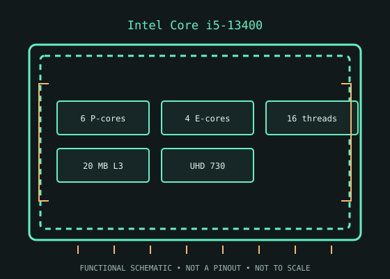

[ INTEL DESKTOP CPU // MODEL RECORD ]
Intel Core i5-13400
Raptor Lake-S (13th-generation Core), Q1 2023; 10 cores (6 P-cores + 4 E-cores) / 16 threads; P-core base 2.50 GHz, max turbo 4.60 GHz; E-core base 1.80 GHz, max turbo 3.30 GHz; 20 MB Intel Smart Cache (L3); 65 W processor base power. Verify the physical model marking and platform support before installation.

MODEL IDENTIFICATION: Intel Core i5-13400. Specifications refer to this SKU; related suffixes and revisions may differ.
Verified model specifications
| Catalog path | Intel → Core desktop generations |
|---|---|
| Model / generation | Raptor Lake-S (13th-generation Core), Q1 2023 |
| Core and frequency | 10 cores (6 P-cores + 4 E-cores) / 16 threads; P-core base 2.50 GHz, max turbo 4.60 GHz; E-core base 1.80 GHz, max turbo 3.30 GHz |
| Cache / processor power | 20 MB Intel Smart Cache (L3); 65 W processor base power |
| Package / socket | FCLGA1700 (LGA1700) |
| Memory | Dual-channel DDR4-3200 or DDR5-4800; motherboard selects one memory type |
| Integrated graphics | Intel UHD Graphics 730 |
Compatibility and service notes
- Requires an LGA1700 board whose maker supports this exact 13th-generation CPU and the installed BIOS. 700-series boards shipped for this generation; compatible 600-series boards generally need the appropriate firmware update, but support is board-specific. DDR4/DDR5 capability is determined by the particular motherboard. Check cooler mounting, power limits, and BIOS before installation.
- This i5-13400 has UHD Graphics 730; i5-13400F is a separate model without integrated graphics. The i5-13400 is a distinct Raptor Lake-S SKU even though its P/E-core counts match some Alder Lake models.
- Before installation, compare the full processor marking with the motherboard maker’s support list and minimum BIOS, then confirm cooler mounting, memory type, power delivery, and firmware settings. Socket fit alone does not establish compatibility; never force the package.
Service & archival record
Record the full model/ordering code and S-spec, stepping, board revision, BIOS/microcode, memory configuration, cooler, power profile, physical condition, provenance, and source revision. Separate measured behavior from published specifications.
Handle the package by its edges and protect socket contacts. Inspect for contamination, damaged pads/pins, and uneven cooler pressure before use.
Sources & further reading
- Intel ARK — Intel Core i5-13400 product specificationsIntel’s official product-specification lookup/page for the exact processor model.
- Intel — Desktop processor installation supportManufacturer guidance for installation and socket handling; use the motherboard maker’s exact CPU-support list for board and BIOS compatibility.
Verify board revision and firmware with its manufacturer; ARK specifications do not guarantee compatibility with every motherboard sharing a socket.